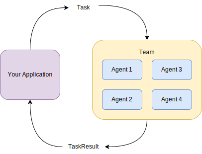

Teams
Warning
AgentChat is Work in Progress. APIs may change in future releases.
In AgentChat, teams define how groups of agents collaborate to address tasks. A team is composed of one or more agents, and interacts with your application by receiving task and returning task result. It is stateful and maintains context across multiple tasks. A team uses a stateful termination condition to determine when to stop processing the current task.
The diagram below shows the relationship between team and your application.

AgentChat provides several preset teams that implements one or more multi-agent design patterns to simplify development. Here is a list of the preset teams:
RoundRobinGroupChat: All participants share context and takes turn to respond in a round-robin fashion. We will cover this team in this section.SelectorGroupChat: All participants share context and use a model-based selector (with custom override) to select the next agent to respond. See Selector Group Chat for more details.Swarm: All participants share context and useHandoffMessageto pass control to the next agent. See Swarm for more details.
At a high-level, a team API consists of the following methods:
run(): Process a task, which can be astr,TextMessage,MultiModalMessage, orHandoffMessage, and returnsTaskResult. The task can also beNoneto resume processing the previous task if the team has not been reset.run_stream(): Similar torun(), but it returns an async generator of messages and the final task result.reset(): To reset the team state if the next task is not related to the previous task. Otherwise, the team can utilize the context from the previous task to process the next one.
In this section, we will be using the
RoundRobinGroupChat team to introduce the AgentChat team API.
Round-Robin Group Chat
RoundRobinGroupChat is a simple team that allows all agents to share context and take turns to respond in a round-robin fashion.
On its turn, each agent broadcasts its response to all other agents in the team, so all agents have the same context.
We will start by creating a team with a single AssistantAgent agent
and TextMentionTermination
termination condition that stops the team when a word is detected.
from autogen_agentchat.agents import AssistantAgent
from autogen_agentchat.task import TextMentionTermination
from autogen_agentchat.teams import RoundRobinGroupChat
from autogen_ext.models import OpenAIChatCompletionClient
# Create an OpenAI model client.
model_client = OpenAIChatCompletionClient(
model="gpt-4o-2024-08-06",
# api_key="sk-...", # Optional if you have an OPENAI_API_KEY env variable set.
)
# Define a tool that gets the weather for a city.
async def get_weather(city: str) -> str:
"""Get the weather for a city."""
return f"The weather in {city} is 72 degrees and Sunny."
# Create an assistant agent.
weather_agent = AssistantAgent(
"assistant",
model_client=model_client,
tools=[get_weather],
system_message="Respond 'TERMINATE' when task is complete.",
)
# Define a termination condition.
text_termination = TextMentionTermination("TERMINATE")
# Create a single-agent team.
single_agent_team = RoundRobinGroupChat([weather_agent], termination_condition=text_termination)
Running Team
Let’s calls the run() method
to start the team with a task.
async def run_team() -> None:
result = await single_agent_team.run(task="What is the weather in New York?")
print(result)
# Use `asyncio.run(run_team())` when running in a script.
await run_team()
TaskResult(messages=[TextMessage(source='user', models_usage=None, content='What is the weather in New York?'), ToolCallMessage(source='assistant', models_usage=RequestUsage(prompt_tokens=70, completion_tokens=15), content=[FunctionCall(id='call_6qWxrK1VdEVSryXKyIVpwE0h', arguments='{"city":"New York"}', name='get_weather')]), ToolCallResultMessage(source='assistant', models_usage=None, content=[FunctionExecutionResult(content='The weather in New York is 72 degrees and Sunny.', call_id='call_6qWxrK1VdEVSryXKyIVpwE0h')]), TextMessage(source='assistant', models_usage=RequestUsage(prompt_tokens=96, completion_tokens=13), content='The weather in New York is 72 degrees and sunny.'), TextMessage(source='assistant', models_usage=RequestUsage(prompt_tokens=125, completion_tokens=4), content='TERMINATE')], stop_reason="Text 'TERMINATE' mentioned")
The team ran the same agent until the termination condition was met.
In this case, the termination condition was met when the word “TERMINATE” is detected in the
agent’s response.
When the team stops, it returns a TaskResult object with all the messages produced by the agents in the team.
Reseting Team
You can reset the team by calling the reset() method.
It will clear the team’s state including all of its agents’.
await single_agent_team.reset() # Reset the team for the next run.
It is usually a good idea to reset the team if the next task is not related to the previous task. However, if the next task is related to the previous task, you don’t need to reset. See Resuming Team below.
Streaming Team Messages
Similar to agent’s on_messages_stream() method,
you can stream the team’s messages by calling the run_stream() method.
It will return a generator that yields the messages produced by the agents in the team as they are generated,
and the last item will be the task result.
from autogen_agentchat.base import TaskResult
async def run_team_stream() -> None:
async for message in single_agent_team.run_stream(task="What is the weather in New York?"):
if isinstance(message, TaskResult):
print("Stop Reason:", message.stop_reason)
else:
print(message)
# Use `asyncio.run(run_team_stream())` when running in a script.
await run_team_stream()
source='user' models_usage=None content='What is the weather in New York?'
source='assistant' models_usage=RequestUsage(prompt_tokens=70, completion_tokens=15) content=[FunctionCall(id='call_FcJlzgDmPUgGSKLjeGajFZ7V', arguments='{"city":"New York"}', name='get_weather')]
source='assistant' models_usage=None content=[FunctionExecutionResult(content='The weather in New York is 72 degrees and Sunny.', call_id='call_FcJlzgDmPUgGSKLjeGajFZ7V')]
source='assistant' models_usage=RequestUsage(prompt_tokens=96, completion_tokens=14) content='The weather in New York is currently 72 degrees and sunny.'
source='assistant' models_usage=RequestUsage(prompt_tokens=126, completion_tokens=4) content='TERMINATE'
Stop Reason: Text 'TERMINATE' mentioned
As the above example shows, you can obtain the reason why the team stopped by checking the stop_reason attribute.
There is a covenient method Console() that prints the messages to the console
with proper formatting.
from autogen_agentchat.task import Console
# Use `asyncio.run(single_agent_team.reset())` when running in a script.
await single_agent_team.reset() # Reset the team for the next run.
# Use `asyncio.run(single_agent_team.run_stream(task="What is the weather in Seattle?"))` when running in a script.
await Console(
single_agent_team.run_stream(task="What is the weather in Seattle?")
) # Stream the messages to the console.
---------- user ----------
What is the weather in Seattle?
---------- assistant ----------
[FunctionCall(id='call_QBqpeKQlczRYIlCIzKh43Kha', arguments='{"city":"Seattle"}', name='get_weather')]
[Prompt tokens: 69, Completion tokens: 14]
---------- assistant ----------
[FunctionExecutionResult(content='The weather in Seattle is 72 degrees and Sunny.', call_id='call_QBqpeKQlczRYIlCIzKh43Kha')]
---------- assistant ----------
The weather in Seattle is currently 72 degrees and sunny.
[Prompt tokens: 93, Completion tokens: 13]
---------- assistant ----------
TERMINATE
[Prompt tokens: 122, Completion tokens: 4]
---------- Summary ----------
Number of messages: 5
Finish reason: Text 'TERMINATE' mentioned
Total prompt tokens: 284
Total completion tokens: 31
Duration: 1.82 seconds
Reflection Pattern
Now we will create a team with two agents that implements the Reflection pattern, which is a multi-agent design pattern that uses a critic agent to evaluate the responses of a primary agent.
See how the reflection pattern works using the Core API.
In this example, we will use the AssistantAgent agent class
for both the primary and critic agents.
We will use both the TextMentionTermination
and MaxMessageTermination termination conditions
together to stop the team.
from autogen_agentchat.agents import AssistantAgent
from autogen_agentchat.task import Console, MaxMessageTermination, TextMentionTermination
from autogen_agentchat.teams import RoundRobinGroupChat
from autogen_ext.models import OpenAIChatCompletionClient
# Create an OpenAI model client.
model_client = OpenAIChatCompletionClient(
model="gpt-4o-2024-08-06",
# api_key="sk-...", # Optional if you have an OPENAI_API_KEY env variable set.
)
# Create the primary agent.
primary_agent = AssistantAgent(
"primary",
model_client=model_client,
system_message="You are a helpful AI assistant.",
)
# Create the critic agent.
critic_agent = AssistantAgent(
"critic",
model_client=model_client,
system_message="Provide constructive feedback. Respond with 'APPROVE' to when your feedbacks are addressed.",
)
# Define a termination condition that stops the task if the critic approves.
text_termination = TextMentionTermination("APPROVE")
# Define a termination condition that stops the task after 5 messages.
max_message_termination = MaxMessageTermination(5)
# Combine the termination conditions using the `|`` operator so that the
# task stops when either condition is met.
termination = text_termination | max_message_termination
# Create a team with the primary and critic agents.
reflection_team = RoundRobinGroupChat([primary_agent, critic_agent], termination_condition=termination)
Let’s give a poem-writing task to the team and see how the agents interact with each other.
# Use `asyncio.run(Console(reflection_team.run_stream(task="Write a short poem about fall season.")))` when running in a script.
await Console(
reflection_team.run_stream(task="Write a short poem about fall season.")
) # Stream the messages to the console.
---------- user ----------
Write a short poem about fall season.
---------- primary ----------
Golden leaves dance on the breeze,
Whispering secrets through the trees.
Crisp air nips at cheeks so bright,
As daylight fades to early night.
Pumpkins sit on porches grand,
In a painted, harvest land.
Sweaters hug us, warm and snug,
While cider fills each steamy mug.
In this season's gentle sway,
Nature tells of time's ballet.
With each leaf's descent and flight,
Autumn sings its soft goodnight.
[Prompt tokens: 27, Completion tokens: 107]
---------- critic ----------
Your poem is beautiful and elegantly captures the essence of the fall season. The imagery you used creates vivid pictures of autumn landscapes and activities, making it easy for the reader to visualize the scene. The rhyming and rhythm contribute to the poem's musicality, enhancing its appeal. Each stanza highlights different aspects of fall, creating a well-rounded depiction of the season.
To make the poem even more evocative, consider including a few additional sensory details or emotions tied to the season. For instance, you might evoke the sounds of rustling leaves or the feeling of warmth from a fireplace. Overall, it's a delightful and charming poem that effectively conveys the spirit of fall.
If these suggestions are considered, please share the revised poem for additional feedback!
[Prompt tokens: 152, Completion tokens: 148]
---------- primary ----------
Thank you for the thoughtful feedback! Here's a revised version of the poem, incorporating more sensory details and emotions:
---
Golden leaves dance on the breeze,
Whispering secrets through the trees.
Crisp air kisses cheeks aglow,
As twilight casts a gentle show.
Pumpkins guard each porch with pride,
In this painted, harvest tide.
Sweaters hug us, warm and snug,
While cider steams in every mug.
Children laugh in rustling leaves,
As branches weave autumnal eaves.
Fireplaces crackle, whisper warmth,
Embracing hearts in homey charms.
In this season's tender sway,
Nature turns in grand ballet.
With each leaf's descent and flight,
Autumn sings its soft goodnight.
---
I hope this version resonates even more deeply with the spirit of fall.
[Prompt tokens: 294, Completion tokens: 178]
---------- critic ----------
Your revised poem beautifully captures the essence of the fall season with delightful sensory details and emotions. The inclusion of words like "twilight casts a gentle show," "children laugh in rustling leaves," and "fireplaces crackle" adds depth and paints a vivid picture of autumn scenes. The addition of emotions, particularly the "embracing hearts in homey charms," evokes a sense of warmth and comfort associated with this season.
The poem flows smoothly with its rhythmic quality and maintains a harmonious balance in its description of autumn. Overall, it now provides an even richer and more immersive experience for the reader. Excellent work on enhancing the sensory experience—this version resonates wonderfully with the spirit of fall.
APPROVE
[Prompt tokens: 490, Completion tokens: 142]
---------- Summary ----------
Number of messages: 5
Finish reason: Text 'APPROVE' mentioned, Maximum number of messages 5 reached, current message count: 5
Total prompt tokens: 963
Total completion tokens: 575
Duration: 8.10 seconds
Resuming Team
Let’s run the team again with a new task while keeping the context about the previous task.
# Write the poem in Chinese Tang poetry style.
# Use `asyncio.run(Console(reflection_team.run_stream(task="将这首诗用中文唐诗风格写一遍。")))` when running in a script.
await Console(reflection_team.run_stream(task="将这首诗用中文唐诗风格写一遍。"))
---------- user ----------
将这首诗用中文唐诗风格写一遍。
---------- primary ----------
金叶飘舞随风起，
林间低语秋声细。
凉风轻拂面颊红，
夕光渐隐天色丽。
南瓜门前静自笑，
丰收景色绘秋貌。
暖衣贴身享温柔，
热饮氤氲杯中绕。
童声笑逐落叶中，
枝叶缀出秋帷浓。
炉火轻鸣诉温情，
温馨满怀思乡容。
此时佳季自徘徊，
秋之舞步若梦来。
片片叶落随风去，
秋声袅袅道安睡。
[Prompt tokens: 664, Completion tokens: 155]
---------- critic ----------
这首诗成功地以唐诗的风格捕捉了秋天的精髓，以古雅的语言和流畅的节奏展示了秋日的美丽。你运用了优美的意象，如“金叶飘舞”和“夕光渐隐”，将秋季的景色描绘得栩栩如生。词句简炼而意境深远，充满了诗意。
同时，诗中融入的情感，如“温馨满怀思乡容”以及“炉火轻鸣诉温情”，有效传达了秋天的暖意与思乡之情，令人感到温暖和亲切。
整体而言，这是一首极具唐诗魅力的作品，成功地展现了秋天的许多层面，并引发读者的共鸣。恭喜你完成了这次优雅的改编！
APPROVE
[Prompt tokens: 837, Completion tokens: 199]
---------- Summary ----------
Number of messages: 3
Finish reason: Text 'APPROVE' mentioned
Total prompt tokens: 1501
Total completion tokens: 354
Duration: 4.44 seconds
Resume with another task.
# Write the poem in Spanish.
# Use `asyncio.run(Console(reflection_team.run_stream(task="Write the poem in Spanish.")))` when running in a script.
await Console(reflection_team.run_stream(task="Write the poem in Spanish."))
---------- user ----------
Write the poem in Spanish.
---------- primary ----------
Certainly! Here's a translation of the poem into Spanish:
---
Hojas doradas bailan en la brisa,
Susurran secretos en la arboleda.
El aire fresco besa las mejillas,
Mientras el crepúsculo se despide a su manera.
Calabazas vigilan cada entrada,
En esta tierra de cosecha pintada.
Los suéteres nos abrazan calurosos,
Mientras el vapor sube de cada taza amorosa.
Risas de niños suenan en hojas caídas,
Mientras ramas tejen toldos de caricias.
Las chimeneas crepitan, susurran calor,
Abrazando los corazones con su amor hogareño.
En la danza de esta estación serena,
La naturaleza gira con su escena.
Con cada hoja que desciende en el viento,
El otoño canta su suave cuento.
---
Espero que esta traducción refleje el mismo espíritu y encantamiento del poema original.
[Prompt tokens: 1719, Completion tokens: 209]
---------- critic ----------
Your translation of the poem into Spanish beautifully captures the essence and lyrical quality of the original. The imagery and emotions are conveyed effectively, maintaining the warmth and serene atmosphere of fall that the poem embodies. Each stanza mirrors the themes presented in the English version, like the golden leaves, harvest, and cozy reflections of autumn.
Overall, your translation is both poetic and faithful to the original content. If you have further adjustments or specific stylistic preferences, feel free to share. Great job on this translation!
APPROVE
[Prompt tokens: 1946, Completion tokens: 102]
---------- Summary ----------
Number of messages: 3
Finish reason: Text 'APPROVE' mentioned
Total prompt tokens: 3665
Total completion tokens: 311
Duration: 4.22 seconds
Resuming A Previous Task
We can call run() or run_stream() methods
without setting the task again to resume the previous task. The team will continue from where it left off.
# Use the `asyncio.run(Console(reflection_team.run_stream()))` when running in a script.
await Console(reflection_team.run_stream())
---------- primary ----------
Thank you for your kind words! I'm glad the translation captures the essence and lyrical quality of the original poem. If you have any more requests or need further assistance, please feel free to let me know. I'm here to help!
[Prompt tokens: 2042, Completion tokens: 46]
---------- critic ----------
You're very welcome! I'm glad to hear that you're satisfied with the translation. If you have any more requests, whether it's poetry, translation, or any other kind of assistance, don't hesitate to reach out. I'm here to help with whatever you need. Enjoy the rest of your creative journey!
[Prompt tokens: 2106, Completion tokens: 58]
---------- primary ----------
Thank you for your encouraging words! I'm here to assist you with any other requests you might have, whether related to creativity, translation, or any other topic. Feel free to reach out whenever you need help or inspiration. Enjoy your journey in creativity!
[Prompt tokens: 2158, Completion tokens: 50]
---------- critic ----------
You're welcome! It's always a pleasure to assist you. If you ever have more questions or need inspiration, don't hesitate to reach out. Happy creating, and enjoy every moment of your creative journey!
[Prompt tokens: 2226, Completion tokens: 39]
---------- primary ----------
Thank you so much! Your encouragement is greatly appreciated. Feel free to reach out at any time for assistance or inspiration. I wish you the best on your creative journey and hope you enjoy every step of the way!
[Prompt tokens: 2259, Completion tokens: 43]
---------- Summary ----------
Number of messages: 5
Finish reason: Maximum number of messages 5 reached, current message count: 5
Total prompt tokens: 10791
Total completion tokens: 236
Duration: 5.00 seconds
Pause for User Input
Often times, team needs additional input from the application (i.e., user) to continue processing the task. We will show two possible ways to do it:
Set the maximum number of turns such that the team stops after the specified number of turns.
Use the
HandoffTerminationtermination condition.
You can also use custom termination conditions, see Termination Conditions.
Maximum Number of Turns
This is the simplest way to pause the team for user input. For example, you can set the maximum number of turns to 1 such that the team stops right after the first agent responds. This is useful when you want the user to constantly engage with the team, such as in a chatbot scenario.
Simply set the max_turns parameter in the RoundRobinGroupChat() constructor.
team = RoundRobinGroupChat([...], max_turns=1)
Once the team stops, the turn count will be reset. When you resume the team, it will start from 0 again.
Note that max_turn is specific to the team class and is currently only supported by
RoundRobinGroupChat, SelectorGroupChat, and Swarm.
When used with termination conditions, the team will stop when either condition is met.
Using Handoff to Pause Team
You can use the HandoffTermination termination condition
to stop the team when an agent sends a HandoffMessage message.
Let’s create a team with a single AssistantAgent agent
with a handoff setting.
Note
The model used with AssistantAgentmust support tool call
to use the handoff feature.
from autogen_agentchat.agents import AssistantAgent, Handoff
from autogen_agentchat.task import HandoffTermination, TextMentionTermination
from autogen_agentchat.teams import RoundRobinGroupChat
from autogen_ext.models import OpenAIChatCompletionClient
# Create an OpenAI model client.
model_client = OpenAIChatCompletionClient(
model="gpt-4o-2024-08-06",
# api_key="sk-...", # Optional if you have an OPENAI_API_KEY env variable set.
)
# Create a lazy assistant agent that always hands off to the user.
lazy_agent = AssistantAgent(
"lazy_assistant",
model_client=model_client,
handoffs=[Handoff(target="user", message="Transfer to user.")],
system_message="Always transfer to user when you don't know the answer. Respond 'TERMINATE' when task is complete.",
)
# Define a termination condition that checks for handoff message targetting helper and text "TERMINATE".
handoff_termination = HandoffTermination(target="user")
text_termination = TextMentionTermination("TERMINATE")
termination = handoff_termination | text_termination
# Create a single-agent team.
lazy_agent_team = RoundRobinGroupChat([lazy_agent], termination_condition=termination)
Let’s run the team with a task that requires additional input from the user because the agent doesn’t have relevant tools to continue processing the task.
from autogen_agentchat.task import Console
# Use `asyncio.run(Console(lazy_agent_team.run_stream(task="What is the weather in New York?")))` when running in a script.
await Console(lazy_agent_team.run_stream(task="What is the weather in New York?"))
---------- user ----------
What is the weather in New York?
---------- lazy_assistant ----------
[FunctionCall(id='call_YHm4KPjFIWZE95YrJWlJwcv4', arguments='{}', name='transfer_to_user')]
[Prompt tokens: 68, Completion tokens: 11]
---------- lazy_assistant ----------
[FunctionExecutionResult(content='Transfer to user.', call_id='call_YHm4KPjFIWZE95YrJWlJwcv4')]
---------- lazy_assistant ----------
Transfer to user.
---------- Summary ----------
Number of messages: 4
Finish reason: Handoff to user from lazy_assistant detected.
Total prompt tokens: 68
Total completion tokens: 11
Duration: 0.73 seconds
You can see the team stopped due to the handoff message was detected. Let’s continue the team by providing the information the agent needs.
# Use `asyncio.run(Console(lazy_agent_team.run_stream(task="It is raining in New York.")))` when running in a script.
await Console(lazy_agent_team.run_stream(task="It is raining in New York."))
---------- user ----------
It is raining in New York.
---------- lazy_assistant ----------
I hope you stay dry! Is there anything else you would like to know or do?
[Prompt tokens: 108, Completion tokens: 19]
---------- lazy_assistant ----------
TERMINATE
[Prompt tokens: 134, Completion tokens: 4]
---------- Summary ----------
Number of messages: 3
Finish reason: Text 'TERMINATE' mentioned
Total prompt tokens: 242
Total completion tokens: 23
Duration: 6.77 seconds